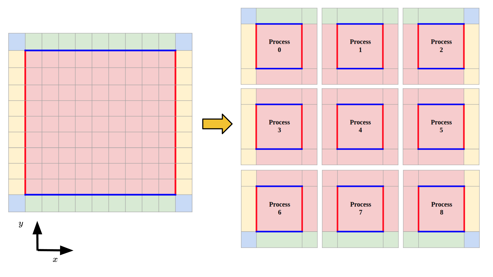

A parallel multi-dimensional grid-based kinetic Vlasov solver for computational plasma dynamics, main application scopes focus on electric propulsion plasma simulation and space plasma turbulence/instabilities simulation and basic plasma dynamics. This readme file serves to show the outline and preliminary results for this project.
* Chen Cui (cuichen@usc.edu)
The model used in this work is a Vlasov-Poisson system which is a kinetic description of the electrostatic collisionless plasma system(with or without the external B field). The Vlasov equation can be written as:


The electric potential.  needs to be solved self-consistently using the Poisson equation
needs to be solved self-consistently using the Poisson equation


The phase space(both physical and velocity space) will be discretized into computational mesh. The partial differential equations in the Vlasov-Poisson system will be solved directly on the mesh. While the Vlasov-Poisson system is a non-linear system, the Vlasov equation itself is a first-order hyperbolic partial differential equation (PDE). Many numerical schemes have been developed to solve hyperbolic PDEs.
The methods below are used to discretize the PDEs to numerically solve the Vlasov-Poisson system above.
We use this term to describe the capability of handling the phase space dimensions: xDyV (x physical domain dimensions and y velocity domain dimensions).
The code will solve the Vlasov-Poisson system in the following process [2]:
Solve the spatial advection equations


Update the Poisson equation:

Solve the acceleration equations:


Solve the spatial advection equations


Schematic Plot for 2D2V Vlasolver calculation domain
The code adopts objective-oriented structure. And the classes(modules) can be categorized into several groups. 1. Utilities: * Control class * Mesh class * ParallelControl class(If parallelization enabled, all of the MPI functions used in this code are wrapped here.) * LocalMesh class(If parallelization enabled) 2. Containers: * ScalarField class * VectorField class * FunctionField class 3. Poisson Solver: * Poisson class 4. Vlasov Solver: * Vlasov class * InitialFun class(For initial condition and boundary condition implementations) 5. Diagnostic: * Diagnostics class
Vlasolver is currently parallelized by doing domain decomposition in physical domain. The physical domain is decomposed into local domains and assigned to the corresponding process. Informations are changed and stored in each local domain's guard cells. The velocity is not decomposed now and each process have a full set of velocity space. It is in the plan that in the future the shared-memory parallelization techniques or the heterogeneous computing techniques can be used to parallize the velocity space.

Schematic plot for the domain decomposition in physical space
For the Vlasov equation solving module, the normal communication mode is used and each process send and receive information to/from their neighbors.
Schematic plot for the physical space communications
For the Poisson solver, currently the code adopt the "Gather-and-Solve" mode. The global mesh information is used to construct the coefficient matrix for the Poisson solver at the initialization of the Poisson solver and the inverse matrix of this coefficient matrix is solved with the support of Eigen library and Intel MKL library. In each step, each process will calculate the local charge and these information will be gathered by the "solver" process, the "solver" process will then calculate the potential and E field based on this information and will broadcast the corresponding information for each processor. It is in the plan that in the future this code will support potential solver which solves the potential locally.

Schematic plot for the "Gather-and-Solve" scheme
We first carry out a two-dimensional simulation of the two-stream instability as validation for the 2D2V Vlasolver. The initial set-up is set to be the same with the set-up in the work by Crouseilles [3]. The initial velocity distribution function is given as

Contour of integrated velocity distribution function at different time moment
Figure above shows the evolution history of the integrated velocity distribution function. The vortex-like structure is seen clearly to grow in the figure and the vortex-like structure corresponds to the nonlinear saturation of the instability.
We next consider Landau damping. The simulation setup is similar to that in Filbet's work[1]. The initial VDF is set to be

This initial set-up corresponds to the Linear Landau damping along the diagonal line of the physical domain. 4 processes are used to parallelized the simulation and for a 10000 steps run the computational time is approximately 1 hour 3 minutes on an Intel i7-7700 workstation. Figure shown below shows the electric field energy in the normalized scale. The red dashed line shows the linear theory predicted slope. It is shown the simulation results correspond with the theoretical predicted value well.
A nonlinear Landau damping test case is also performed under 2D2V phase space. The initial VDF is set to be

Electric field energy history for Landau Damping cases. (a). Linear Landau Damping. (b). Non-linear Landau Damping.
g++ compiler(>=5.4.0 and recommend 8.3.0) icpc compiler(tested 2019 release and 2020 release) LLVM clang++ compiler(>=11.0).
Parallel Environment:
MPI Library: OpenMPI(>=1.10)
Necessary Math Library:
Math Kernel Library(MKL)(>=2019 release)Eigen linear algebra library(>=3.3.9)[1] Cui, C., Wang, J., 2021. Development of a Parallel Multi-dimensional Grid-based Vlasov Solver for Plasma Plume Simulation. In AIAA Propulsion and Energy 2021 Forum (To be published soon).
[2] Cui, C., Huang, Z., Hu, Y. and Wang, J., 2019. Grid-Based Kinetic Simulations of Collisionless Plasma Expansion.
[3] Cui, C., Hu, Y. and Wang, J., 2019. Direct Grid-Based Vlasov Simulation of Collisionless Plasma Expansion of Ion Thruster Plume. In AIAA Propulsion and Energy 2019 Forum (p. 3992).
[1] Filbet, F., Sonnendrücker, E. and Bertrand, P., 2001. Conservative numerical schemes for the Vlasov equation. Journal of Computational Physics, 172(1), pp.166-187.
[2] Cheng, C.Z. and Knorr, G., 1976. The integration of the Vlasov equation in configuration space. Journal of Computational Physics, 22(3), pp.330-351.
[3] Crouseilles, N., Gutnic, M., Latu, G., and Sonnendrücker, E., 2008. Comparison of two Eulerian solvers for the four-dimensional Vlasov equation: Part II. Communications in nonlinear science and numerical simulation, 13(1), pp.94–99.
[4] Umeda, T., 2008. A conservative and non-oscillatory scheme for Vlasov code simulations. Earth, planets and space, 60(7), pp.773–779.